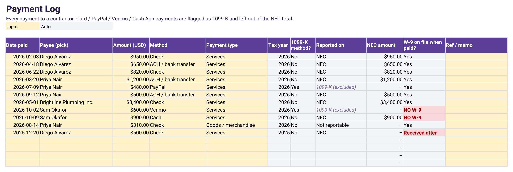
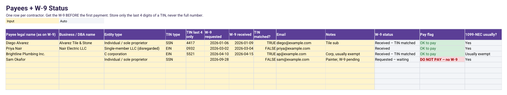
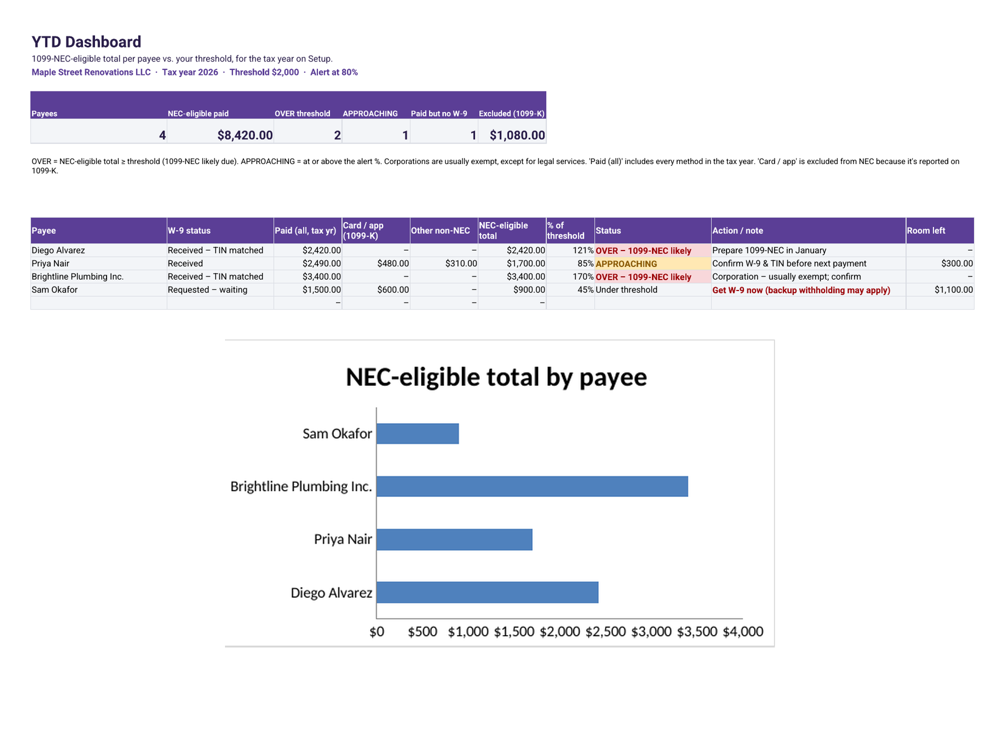
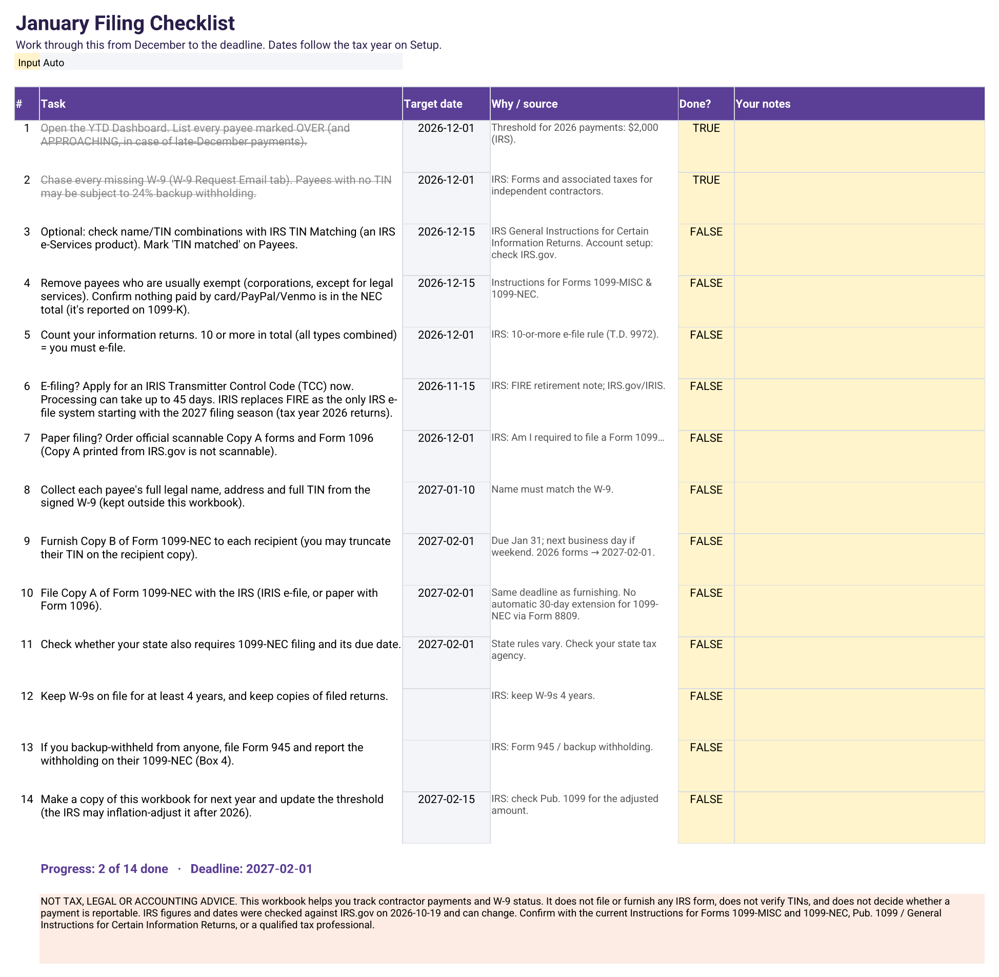

How to Track 1099-NEC Contractors and W-9s for 2026 (the New $2,000 Threshold)
Not tax, legal or accounting advice. This guide is general information for US small businesses. IRS figures were checked on IRS.gov on October 27, 2026 and can change. Your situation may differ; confirm with the current IRS instructions or a qualified tax professional before you file.
If you pay freelancers, subcontractors, cleaners or handymen, January brings a deadline: a Form 1099-NEC for each one you paid enough during the year. For 2026 the line moved. Here's how to track contractor payments and W-9s through the year so January is a checklist, not a scramble.
The 2026 1099-NEC threshold is $2,000
For payments made before 2026, the reporting threshold was $600. For payments made in 2026, it is $2,000, and it may be adjusted for inflation beginning in 2027 (IRS: Am I required to file a Form 1099; Instructions for Forms 1099-MISC and 1099-NEC). The instructions describe the test as payments of $2,000 or more to a non-employee in the course of your trade or business.
| Payments made in | 1099-NEC threshold |
|---|---|
| 2025 and earlier | $600 |
| 2026 | $2,000 |
| 2027 and later | Inflation-adjusted; see IRS Pub. 1099 |
What counts toward the total (and what doesn't)
- Counts: payments for services by check, ACH, wire or cash to individuals, sole proprietors, partnerships and most LLCs.
- Usually doesn't: payments made by credit or debit card, or through a third-party payment network such as PayPal. The IRS instructions say those are reported on Form 1099-K by the payment settlement entity, not on 1099-NEC.
- Corporations are generally exempt, with an important exception: attorneys' fees of $2,000 or more are reportable even when the law firm is a corporation.
- Goods (materials bought from a supplier) aren't nonemployee compensation.

Get a W-9 before the first payment
Form W-9 gives you the payee's legal name, entity type and taxpayer identification number (TIN). The IRS says to keep the W-9 on file for four years. If a payee doesn't give you a TIN, you may have to withhold 24% backup withholding from reportable payments (IRS: Forms and associated taxes for independent contractors). The simplest habit: no W-9, no payment.
For privacy, a tracking spreadsheet only needs the last four digits of the TIN. Keep the signed W-9s somewhere secure and copy the full number from there when you file.

Track running totals and catch payees near the line
Log every payment with date, payee, amount and method. Then keep a per-payee total of NEC-eligible payments (excluding card and payment-app payments). Flag anyone at about 80% of $2,000 ($1,600) as "approaching" so a December invoice doesn't surprise you, and anyone at $2,000 or more as "over."

The January filing checklist
- Deadline: Form 1099-NEC must be furnished to the recipient and filed with the IRS by January 31; if that falls on a weekend or legal holiday, the next business day. January 31, 2027 is a Sunday, so for 2026 payments the date is Monday, February 1, 2027 (i1099mec).
- E-file platform: beginning with the 2027 filing season (tax year 2026 returns), IRIS becomes the sole electronic filing platform as the IRS retires FIRE (IRS). If you'll e-file yourself, apply for an IRIS Transmitter Control Code early.
- 10-return rule: if you file 10 or more information returns in total, you generally must e-file (General Instructions for Information Returns).
- Paper filers: Copy A printed from IRS.gov isn't scannable; order official forms.
- Check your state for its own 1099 filing rules.

FAQ
What is the 1099-NEC threshold for 2026?
For payments made in 2026, the IRS 1099-NEC reporting threshold is $2,000 (it was $600 for payments made before 2026). It may be adjusted for inflation beginning in 2027. This is general information, not tax advice.
Do I send a 1099-NEC for contractors I paid with PayPal or a credit card?
Generally no. The IRS instructions say payments made by payment card or through a third-party network are reported on Form 1099-K by the payment settlement entity, not on Form 1099-NEC.
When are 2026 Forms 1099-NEC due?
By January 31, moved to the next business day when it falls on a weekend. January 31, 2027 is a Sunday, so the date is February 1, 2027, for both the recipient copy and the IRS filing.
How long should I keep W-9s?
The IRS says to keep Form W-9 on file for four years.
Let a spreadsheet do the tracking
The 1099 Contractor & W-9 Tracker runs this whole process: a Payees tab with W-9 status, a Payment Log that excludes 1099-K methods automatically, a YTD Dashboard against an editable $2,000 threshold, a 14-step January checklist and a copy-paste W-9 request email. It doesn't file forms or verify TINs. Buy it on Etsy or Gumroad.